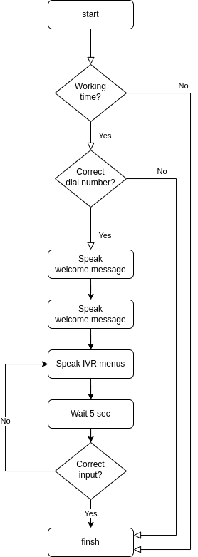

Overview
The Flow in VoIPBIN is a powerful set of instructions that guides the platform on how to handle incoming calls. When someone calls one of your VoIPBIN numbers or destinations, the platform looks up the associated URL and sends a request. The Flow instructions are then read to determine the appropriate actions to be taken, such as recording the call, playing a message, or prompting the caller to press digits on their keypad.
At its core, the Flow is an array of JSON objects with special tags defined by VoIPBIN, enabling users to build their own Programmable Voice applications.
How the flow works
When an incoming call is received on one of your VoIPBIN numbers or destinations, the platform identifies the associated URL and sends a request.
The Flow instructions are then processed, providing a step-by-step guide on how to handle the call. This might involve greeting the caller, presenting options, gathering input, or executing various actions based on the caller’s response.
Unified flow
VoIPBIN’s Unified Flow feature is a game-changer, allowing users to create a single flow that can be attached to multiple communication channels, including voice and video calls, SMS, and RESTful API triggers.
With Unified Flow, users can design a custom flow that defines the actions to be taken when a specific channel request is received. VoIPBIN then automatically executes this flow, ensuring a consistent experience for customers across various channels.
Non-linear action execution
VoIPBIN’s Flow provides the flexibility of Non-Linear action execution.
Users can customize their actions in both linear and non-linear ways, allowing them to define complex logic and decision trees to handle various call scenarios.
Flow fork
Certain flow actions, such as fetch, fetch_flow, queue_join, and more, enable flow forking.
When the flow is forked, the execution cursor moves to the forked flow and starts executing the actions within it. Once the forked flow reaches its end, the execution cursor moves back to the following action of the forking action, continuing the flow execution.

Actions
Within VoIPBIN, actions dictate the course of the platform’s response in a given flow, encompassing tasks such as initiating calls, playing sounds or prompts, activating text-to-speech, sending SMS or DTMFs, and dispatching SNS messages. These diverse actions serve as indispensable building blocks for crafting customized voice applications, ensuring the creation of uniquely tailored call experiences for users.
VoIPBIN’s Flow provides developers with a versatile and robust toolkit, empowering them to forge dynamic voice applications, efficiently manage incoming calls, and curate personalized call encounters. Through its non-linear execution, cohesive flow capabilities, and an array of actions including SMS, DTMFs, SNS messages, and more, VoIPBIN’s Flow unveils limitless possibilities for the development of sophisticated and interactive voice applications, precisely tailored to meet specific business needs.
Flow execution
In VoIPBin, the execution of flows is versatile and can be initiated through various methods:
Incoming/Outgoing Calls:
VoIPBin facilitates flow execution with both incoming and outgoing calls. Users have the option to register a flow to a specific number. Upon an incoming call to the registered number, VoIPBin will seamlessly execute the associated flow. Users can also initiate a call with a predefined flow. Once the outgoing call is answered, the attached flow will be triggered.
Received Messages:
VoIPBin allows users to register flows to received messages. When a message is received, the registered flow will be executed. For example, you can register the flow like the below.
...
{
"type": "branch",
"option": {
"variable": "voipbin.message.text",
"target_ids": {
"call me": "7a1e8c4c-aaea-11ed-9f0f-bffcc31ca3c3",
"text me": "79fd8c9a-aaea-11ed-a238-0b094a49c637",
"text developer": "73107b70-d56b-4b47-b331-dc4f2ac43a5b"
}
}
}
...
In the provided example, the system examines the content of the received message using voipbin.message.text and proceeds to compare the message text. Should the message text match the specified criterion, such as “call me,” the flow execution cursor will be directed to the designated action ID (7a1e8c4c-aaea-11ed-9f0f-bffcc31ca3c3) for subsequent execution. See detail about available variables at here.
Outbound Campaigns:
The VoIPBin platform integrates flows into outbound campaigns, providing a structured and automated approach to execution.
API:
Users have the flexibility to trigger flows through API calls. This API integration empowers developers to seamlessly incorporate and activate flows within their applications. These diverse methods offer users and developers flexibility in integrating and executing flows based on their specific needs and scenarios. See detail about API calling at here. And due to the absence of any media-based incoming or outgoing elements in the API, certain actions within the flow—such as answer, talk, transcribe, and others—will be ignored. Instead, the execution cursor will proceed to the next action in the sequence.